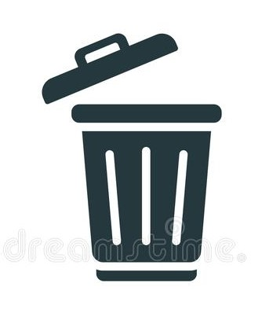

Bin-Py
Log Out
Use it up, wear it out, make it do, or do without. There is no such thing as ‘away’. When we throw anything away it must go somewhere Reduce! Reuse! Recyle! Refuse!
UPLOAD SAMPLE IMAGE
Image Preview